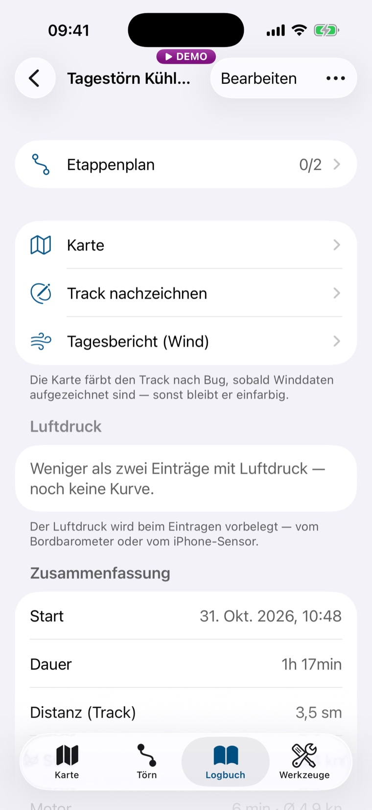
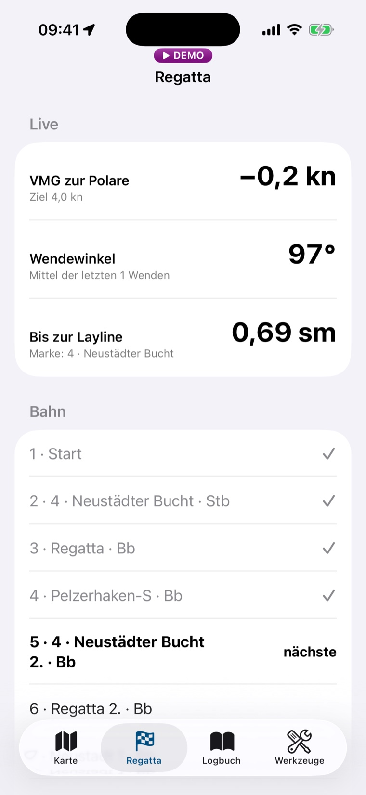
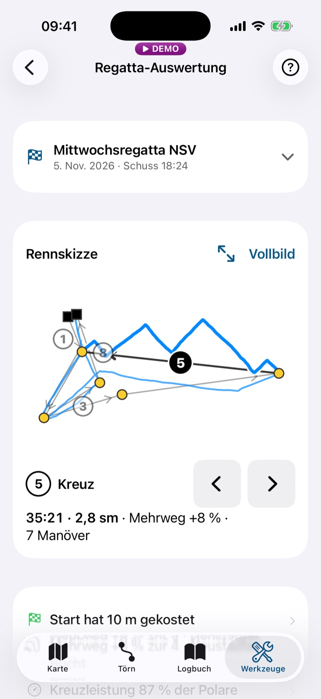
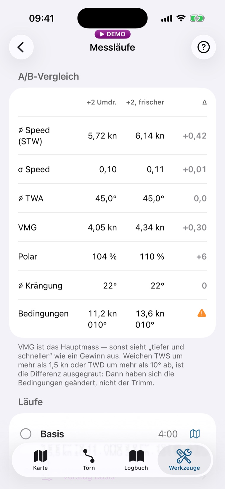
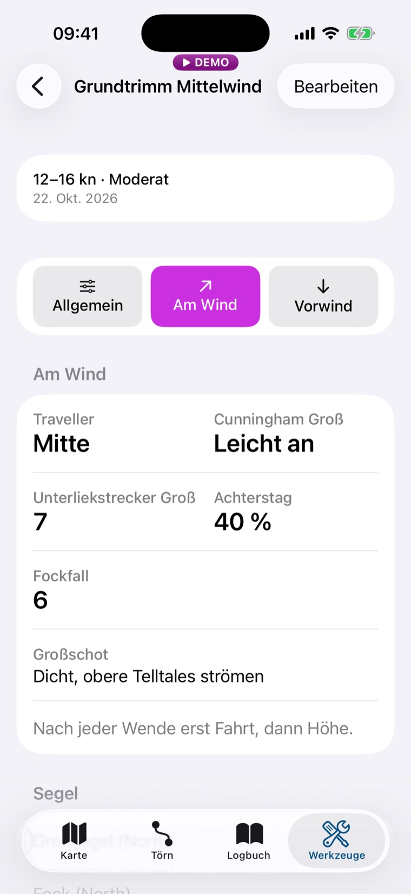

Funktionen
Was Etmar kann
Jede Funktion mit Stufe und Datenquelle. „Bordnetz“ heißt: ein NMEA-Gateway im Boots-WLAN. Alles andere läuft mit dem iPhone allein.
Keine Funktion passt zu dieser Auswahl.
Automatik
Was automatisch gehen kann, geht automatisch: Aufzeichnung, Ablegen, Ankunft, Zieldurchgang.
Die Grenze dazu: Automatisch ablegen kann die App nur, solange sie Daten vom Bordnetz empfängt. Nur dann ist sicher, dass das iPhone an Bord ist und nicht im Auto zum Bäcker fährt. Ohne Bordnetz ist Ablegen ein Tipp. Das automatische Anlegen geht mit GPS allein.

Ablegen mit einem Tipp
Törn und Ablege-Eintrag entstehen sofort. Ortsname und Wind trägt die App nach, die zuletzt gefahrenen Segel sind übernommen.
FreeiPhone-GPSAutomatisches Ablegen
Macht das Boot länger als eine Minute Fahrt über 1,5 kn, entsteht der Ablege-Eintrag von selbst, rückdatiert auf den Fahrtbeginn. Die Minute filtert Verholen im Hafen. Eine Mitteilung bestätigt „Ablegen erkannt“.
FreeBordnetzAuto-Tracking
Zeichnet den Track im Hintergrund auf, auch bei gesperrtem iPhone und nach einem Neustart der App. In Fahrt alle 30 s ein Punkt, in der Regatta alle 5 s, im Stillstand alle 5 min; nach 30 min ohne Bewegung pausiert es und läuft bei Fahrt weiter.
FreeiPhone-GPSAutomatisches Anlegen am Etappenziel
Erreicht das Boot den Ankunftsradius des gewählten Ziels, entsteht „Anlegen (Etappe)“ und die Aufzeichnung stoppt. Der Törn bleibt offen, niemand muss ihn wieder aufmachen.
FreeiPhone-GPSAnlegen ohne gesetztes Ziel
Läuft das Boot langsam (unter 1,5 kn) in den Radius eines Hafens aus deinem Hafenhandbuch ein, entsteht ebenfalls ein Etappen-Anleger. Schnelles Vorbeisegeln zählt nicht.
FreeiPhone-GPSTörn schließt an der Endstation
Ist im Törn ein Zielhafen mit Radius hinterlegt, entsteht dort „Ankommen“ und der Törn wird geschlossen, sobald das Boot zurück ist, nachdem es den Radius einmal verlassen hat.
FreeiPhone-GPSStillstands-Vorschlag
Liegt das Boot zwei Stunden still, schlägt die App vor, den Törn abzuschließen, rückdatiert auf den Moment, in dem das Boot zum Stehen kam.
FreeiPhone-GPSAblegen korrigieren und auffüllen
Fehlt das Stück vom Liegeplatz bis zum erkannten Ablegen, schiebt ein Tipp den Eintrag an den Liegeplatz und füllt die Lücke im Track.
FreeiPhone-GPSMotorstrecke und Motorstunden
Ablegen unter Motor setzt „Motor an“. Die Hafenausfahrt zählt als Motorstrecke, gelb auf der Karte, und die Motorstunden laufen in die Statistik.
FreeEingabeWetter im Eintrag vorbelegt
Wind und Luftdruck stehen schon im Logbuch-Eintrag: vom Bordnetz, sonst von der nächsten Station oder aus dem Modell; der Luftdruck vom Sensor im iPhone.
FreeBordnetzInternetiPhone-SensorRegatta endet an der Ziellinie
Quert das Boot die Ziellinie, nachdem die Bahn gefahren ist, entsteht der Ziel-Eintrag, der Countdown stoppt und eine Mitteilung meldet die Zieldurchfahrt.
FreeiPhone-GPSBahn schaltet weiter
Nach jeder Rundung zeigt die Leiste die nächste Marke mit Seite, Peilung und Distanz.
FreeiPhone-GPSHafenhandbuch füllt sich von selbst
Jedes Ziel, das du wählst, landet als Zielort mit Ankunftsradius im Hafenhandbuch.
Free
Bordnetz (NMEA)
Ein Gateway im Boots-WLAN, und das iPhone wird zum Instrument. Free zeichnet alles auf, was das Bordnetz liefert; Pro rechnet später daraus.

NMEA 2000 über WLAN
Liest NMEA 2000 im RAW-Format über TCP, wie es zum Beispiel das Yacht Devices YDWG-02N sendet. Dessen Werksadresse ist schon eingetragen.
FreeBordnetzNMEA 0183 über WLAN
Liest NMEA-0183-Sätze von jedem WLAN-Gateway oder Multiplexer, über TCP oder UDP.
FreeBordnetzFormat wird erkannt
Du wählst nur Transport, Adresse und Port. Ob 2000 oder 0183 ankommt, liest die App aus den Daten.
FreeBordnetzVerbindet von selbst und wacht
Verbindet beim Start, baut nach einem Abbruch neu auf und merkt, wenn die Verbindung steht, aber nichts mehr kommt.
FreeBordnetzInstrumente vom Bordnetz
Fahrt durchs Wasser, wahrer und scheinbarer Wind, Tiefe, Wassertemperatur, Luftdruck mit Trend, Log und Trip auf vier Standardseiten. Liefert der Bus nur scheinbaren Wind, rechnet die App den wahren.
FreeBordnetzWind an jedem Trackpunkt
Wahrer Wind und Bug werden mitgeschrieben. Daraus entstehen die Bug-Färbung des Tracks und jede Auswertung mit Wind.
FreeBordnetzBoot nach Steuerkurs auf der Karte
Heading-Linie vom Kompass am Netz, dazu der Vektor für den Kurs über Grund.
FreeBordnetzLaylines, Linien-Bias, Segelvorschlag
Laylines von der Marke auf der Karte, Bias der Startlinie im Vorstart, beim Segelwechsel die zum Wind passenden Segel zuoberst.
FreeBordnetzInstrumente prüfen
Je Geber eine Zeile: liefert, schweigt, klemmt oder unplausibel. Zeigt am Steg, welcher Sensor fehlt.
FreeBordnetzKalibrierung und Dämpfung
Masttop-Offset, Loggen-Faktor, Krängungs-Offset, Windwinkel spiegeln, Missweisung von Hand und eine Dämpfung für Wind, Fahrt und Kurs. Die Dämpfung glättet nur die Anzeige, im Track stehen die Messwerte.
FreeBordnetzRohdaten mitschreiben
Schreibt den Bus als Rohlog mit, mit Archiv, Reichweite des Speichers und einem Sparsam-Modus.
FreeBordnetzEigene Instrumentenseiten
Seiten selbst zusammenstellen, Kacheln tauschen, Smart Fields, die je nach Lage den passenden Wert zeigen.
ProBordnetziPhone-GPSSegelkompass
Laylines, Bug-Sektoren und Zielwinkel aus der Polare auf einer Seite.
ProBordnetzPolareRegatta-Seite im Dashboard
VMG gegen die Polare, Wendewinkel, Abstand zur Layline, Trend der Windrichtung, Countdown.
ProBordnetzPolareFahrtbericht und Kalibrier-Befunde
Nach der Fahrt: Sitzt die Windfahne schief, stimmt der Lagesensor? Mit Korrekturwert zum Übernehmen.
ProBordnetz

Einträge und Quick Log
Törns, Einträge, Segelwechsel, Motor und Funkspruch. Die häufigen Einträge liegen als große Knöpfe im Logbuch.
FreeEingabeCheckliste vor dem Ablegen
Liegeplatz, Alter des GPS-Fix, Offline-Karte für die nächste Regatta, Ausrüstung außer Haus.
FreeMehrtagestörn mit Etappenplan
Etappen planen, Crew je Törn, Zielorte aus Hafenhandbuch, Karte oder Ortssuche.
FreeEingabeTörn-Karte
Der Track auf der Karte, nach Bug grün und rot gefärbt, Motorstrecke gelb, Marker an den Bugwechseln.
FreeiPhone-GPSBordnetzTagesbericht
Wind je Stunde, mit Herkunft je Stunde: Bordnetz, Station, Modell oder Logbuch.
FreeBordnetzInternetLuftdruck und Barograph
Druck-Tendenz im Eintrag, Druckkurve im Törn. Ohne Barometer am Bordnetz misst der Sensor im iPhone.
FreeiPhone-SensorBordnetzDeine Saison
Seemeilen, Tage, Motorstunden und Windprofil je Saison, dazu das Saison-PDF.
FreeDeine Saison gegen die Vorsaison
Segelanteil, Motorstunden je 100 sm, Meilen, Tage, Nächte und Häfen im Vergleich.
ProTörnbericht und Törn-Story
Der Törn als PDF und als Bild zum Teilen, beide mit Kartenbild.
FreeExport und Datensicherung
Logbuch als Text, GPX und CSV, GPX-Import, Vollsicherung zum Einspielen.
Free
Karte, Wind und Navigation
Unter Fahrt bist du auf der Karte. Also liegt dort das Handwerkszeug.
Tiefen und Seezeichen gibt es für europäische Gewässer und einen Teil der Karibik. Go-To ist eine Peilung, keine Route um Land.

Karte mit Seezeichen und Tiefen
Kontraststarker Kartenstil, Nachtmodus, eigenes Boot mit Kursvektor.
FreeiPhone-GPSOffline-Karten
Reviere laden, ohne Paketgrenze. Ein Revier in „Mittel“ bringt Häfen und Fahrwasser von selbst in „Fein“ mit.
FreeWind jetzt
Oben auf der Karte, in jeder Lage: Bordnetz, Handwind, nächste Station oder Modell, mit Quelle, Alter und Böen.
FreeBordnetzInternetWind-Ebene
Modellpfeile und Küstenstationen auf der Karte, getrennt schaltbar. Stationen in sieben Farben, das Modell farbig ab Windstärke 5.
FreeInternetWind für Fahrten ohne Windgeber
Nach der Fahrt holt die App den Stundenwind der nächsten Station oder des Modells und speichert ihn an der Fahrt.
FreeInternetGo-To und Routen
Peilung und Distanz zu einem Ziel, Wegpunkt-Folgen mit automatischem Weiterschalten.
FreeiPhone-GPSWegpunkte mit Fotos
Bis zu zehn Fotos je Wegpunkt, zum Wiedererkennen der Ansteuerung.
FreeEingabeHafenhandbuch
Deine Häfen mit Notizen, Toilettencode, Liegegeld und WLAN. Häfen und Ankerplätze aus den Kartendaten stehen offline zur Wahl.
FreeEingabeGPX für den Kartenplotter
Wegpunkte, Bahnen und Routen als GPX-Datei.
Free

Vorstart-Countdown
Mit Ton, Ansage und Haptik an den Marken ab 5:00. Eine Mitteilung kommt eine Minute vor dem Schuss.
FreeStartlinie pingen
Beide Enden einmal anfahren, danach zeigt die App den Abstand zur Linie und „ÜBER x m“, wenn du zu früh bist.
FreeiPhone-GPSRückruf
Zurück in den Vorstart, Bahn und Pings bleiben.
FreeBahn-Editor
Marken, Tore, Start- und Ziellinie, Rundkurs, Bahnänderung, Zonen und Vorlagen.
FreeEingabeBahn-Briefing
Wind gegen die Bahn: Kursart je Schenkel nach der Vorhersage und Zeiten nach deiner hinterlegten Polare.
FreeInternetPolareBahn fahren
Nächste Marke mit Seite, Peilung und Distanz in der Leiste der Karte. Go-To folgt der Bahn.
FreeiPhone-GPSVier Kacheln im Rennen
Nächste Marke, Wendewinkel, Abstand zur Layline und Fortschritt zur Marke. Die Layline braucht Wind vom Bordnetz.
FreeiPhone-GPSBordnetzVMG zur Polare im Rennen
Die vierte Kachel zeigt statt des Fortschritts das VMG gegen das Polar-Ziel.
ProBordnetzPolareFakten des Rennens
Abstand beim Schuss, Zeiten an den Marken und je Schenkel, Wenden und Halsen, Fahrtverlauf, Schlag-Liste, Rennskizze.
FreeiPhone-GPSRegatta-Bilanz
Ergebnisse eintragen, Saison je Kalenderjahr, Zählung gegen die Vorsaison.
FreeEingabeSegelkalender
Regatta- und Trainingstermine; am Renntag entsteht aus dem Termin die Regatta.
FreeEingabe
Auswertung danach
Free sagt, was passiert ist. Pro sagt, warum, und was es gekostet hat.
Die meisten Segler haben kein Bordnetz. Darum rechnet Pro aus GPS allein, was geht, und sagt dazu, wie der Wert entstanden ist. Fehlen Daten, nennt die App den Grund statt einer leeren Seite.

Rennkarte
Drei Sätze oben in der Auswertung: Start, Mehrweg, Kreuzleistung.
ProiPhone-GPSManöver einzeln
Delle in der Fahrt, Erholzeit und Kosten in Sekunden je Wende und Halse; beste, mittlere und schlechteste.
ProiPhone-GPSManöver-Verlust in Metern
Gegen das VMG vor und nach dem Manöver.
ProBordnetzManöver-Lernkurve
Werden die Wenden über die Saison billiger? Mit eigener Reihe für das Training.
ProiPhone-GPSSchenkel-Bilanz
Fortschritt zur Marke, Mehrweg und Manöver je Schenkel.
ProiPhone-GPSStartbilanz
Position auf der Linie, Aufbau der Fahrt, Endenwahl und eine Historie über die Saison. Fahrt gegen das Polar-Ziel mit Wind vom Bordnetz.
ProiPhone-GPSBordnetzZeitverlust-Wasserfall
Wo die Zeit geblieben ist, gegen dein bestes eigenes Rennen; mit Wind vom Bordnetz gegen die Polare.
ProiPhone-GPSBordnetzRundungsqualität und Zielanflug
Delle und Erholung an jeder Tonne, die letzten 200 m vor dem Ziel.
ProiPhone-GPSDeine Leistungswerte
Level je Thema über die gewerteten Regatten, mit Trend seit der letzten.
ProiPhone-GPSEingabeFormkurve und Saisonvergleich
Mittlere Fahrt je Windband über die Saison und gegen die Vorsaison. Polar-Prozent mit Wind vom Bordnetz.
ProiPhone-GPSBordnetzFahrt je Kurs ohne Windgeber
Kreuz, Raumschots und Vorwind nach dem Modellwind, als Schätzung gekennzeichnet.
ProiPhone-GPSInternetGefahrene Polare und Zielwinkel
Was dein Boot wirklich läuft, über der hinterlegten Polare; bester Kreuz- und Vorwindwinkel aus der Messung, zum Übernehmen.
ProBordnetzWind und Dreher
Charakter des Windes, Periode der Dreher, Anteil gesegelter Lifts, Reaktionszeit.
ProBordnetzSteuerruhe, Bug-Asymmetrie, Krängung
Wie ruhig gesteuert wurde, ob ein Bug schneller ist, welche Krängung am schnellsten war.
ProBordnetzSegel-Crossover
Soll gegen Gemessen: welche Garnitur in welchem Wind auf welchem Kurs am besten lief.
ProBordnetz
Training
Zweimal dieselbe Strecke, eine Trimmänderung dazwischen, und Zahlen statt Bauchgefühl.

Messläufe
Lauf starten und beenden, Titel, Dauer und der Trimm dazu.
FreeiPhone-GPSWendenserie
Zehn Wenden oder sechs Halsen als Messlauf. Die Auswertung braucht nur GPS.
FreeiPhone-GPSÜbungsbahn legen und fahren
Up-and-Down am Boot, 0,4 bis 0,9 sm, ein bis drei Runden, mit Prüfung gegen Tiefe und Ufer. Danach die Fakten: Bahnzeit, Rundungen, Wendewinkel.
FreeiPhone-GPSÜbungsbahn zu Hause planen
Im Trainings-Termin: Ort auf der Karte, Achse aus der Vorhersage zur Uhrzeit des Termins.
ProInternetÜbungsbahn-Wertung
Polar-Prozent, Bestwert je Windband und der Verlauf der letzten zehn Bahnen.
ProPolareDaten sammeln
Zeigt die Lücken in Polare, Crossover und Zielwinkeln und macht daraus einen Auftrag fürs nächste Training.
ProBordnetzA/B-Vergleich
Zwei Läufe nebeneinander: Fahrt und Kurs aus GPS; mit Wind vom Bordnetz dazu Windwinkel, VMG und Polar-Prozent.
ProiPhone-GPSBordnetz
Boot, Trimm und Werkstatt
Was zum Schiff gehört, und was im Winter daran zu tun ist.

Trimm-Tagebuch
Welche Einstellung bei welchem Wind lief. Die Trimmfelder legst du selbst an, mit Fotos. „Trimm festhalten“ ist ein Tipp an Deck.
FreeEingabeTrimm nachtragen
Nach dem Törn, vorbelegt aus Track und Logbuch.
FreeEingabeTrimm-Werkbank
Bewertete Einträge, Wind-Achse und Vergleich zweier Einträge. Pro ergänzt die Kennzahlen aus den Messläufen.
Free · mehr mit ProEingabeSegel
Jedes Segel mit Bild und Einsatzbereich; „außer Haus“, wenn es beim Segelmacher liegt.
FreeEingabePolare
Vorlagen für neun Bootstypen, Import aus Datei, ORC-Zertifikat einlesen.
FreeEingabeAusrüstung und Wartung
Wartungs-Erinnerung, Wartungsbuch je Teil, Inventar als PDF für Versicherung oder Verkauf.
FreeEingabeWerkstatt
Arbeiten am Boot als Projekt: Checkliste, Termine, Kosten, Fotoalbum mit Vorher und Nachher.
FreeEingabeMehrere Werkstatt-Projekte nebeneinander
Ein drittes offenes Projekt, aus einer Vorlage oder als Kopie auf ein anderes Boot. Zwei sind frei.
ProEingabe
Hilfsmittel für den Notfall
Immer frei. Hilfsmittel, keine Zusage: Sie ersetzen weder Wache noch Ausguck noch die Ausrüstung an Bord.
MOB
Hält die Position fest und zeigt Peilung und Distanz dorthin.
FreeiPhone-GPSSOS-Sprechfunktafel
Der Notruf zum Ablesen, mit Position und Bootsdaten, als Formular je Lage und als PDF.
FreeiPhone-GPSAIS-Ziele mit Warnung
Ziele vom Bordnetz auf der Karte, mit Warnung nach CPA und TCPA.
FreeBordnetz
Demo-Modus
Simuliert ein Bordnetz und füllt die App mit Beispieldaten. Schaltet Pro frei.
FreeOffline an Bord
Logbuch, Karte aus den geladenen Paketen, Countdown und Auswertung laufen ohne Netz.
FreeDeine Daten
Dein Logbuch liegt auf deinem iPhone und, wenn du die iCloud-Sicherung einschaltest, in deiner privaten iCloud.
FreeNachtmodus und Bildschirmsperre
Dunkle Darstellung für die Nachtfahrt; die Sperre schützt vor Fehltipps durch Gischt.
FreeProfil
Bereiche abwählen, die du nicht brauchst: Regatta und Training, Fahrt, Werkstatt.
FreeTeilen
Bahnen, Routen und Zielorte als Datei an Crew und Verein.
FreeTutorials in der App
Jeder Bereich erklärt, unter Einstellungen.
FreeSprachen und Einheiten
Deutsch und Englisch; Seemeilen oder Kilometer, Knoten oder km/h, Meter oder Fuß.
Free